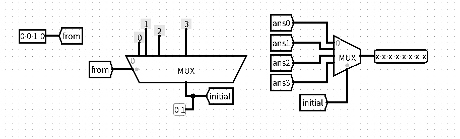
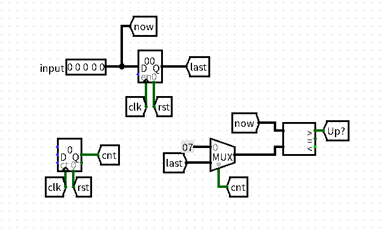
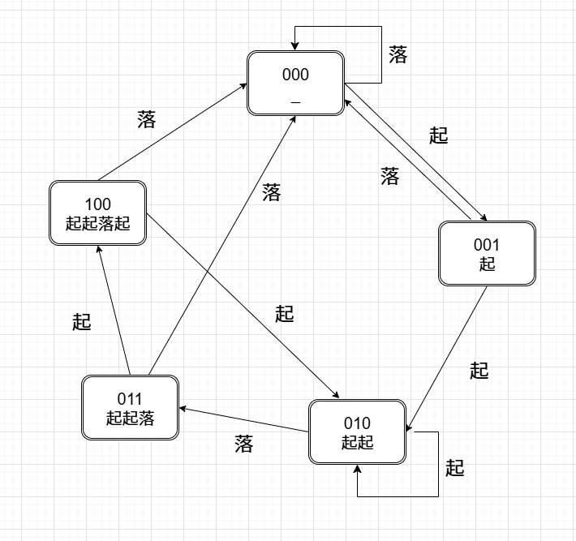

⌈BUAA CO⌋ p0 记录
P0 的考察内容是 Logisim。题目顺序是按照笔者做题顺序来的，与官方排序无关。
第一题（组合电路）
题意：
某幢楼房共有
四层。以 位二进制形式给出每层的人数（保证各不相同且均不为 ），以独热码的形式给出电梯初始时刻所在的楼层。 电梯会在载入初始楼层所有人后，前往剩下楼层中人数最多的楼层。到达后再载入该楼层的所有人，然后前往剩下楼层中人数最多的楼层……重复直至各层人数都为
时停止。 以
位二进制输出电梯移动的总楼层数。
没有做太多思考就急忙开搭了，导致这道题实现得非常差。简单记录一下我的神人暴力做法，如下：
首先用一个 MUX 把起始楼层的独热码转化成

接下来是对各起始楼层的答案进行分类，笔者构建得非常丑陋。
确定了起始楼层后，由于剩下的三个楼层各不相同，所以大小排序只有
Splitter 将三个大小关系编为
MUX 的读入。
除了循环大于和循环小于的
C++ 打完表手动输入的。

将各个初始楼层讨论完就完成了这道题！如果你的做法和我一样，恭喜你考场上大半时间都栽这了。
第二题（Mealy机）
题意：
每个周期读入
位操作码 和 位操作数 ，输出计算结果并将结果存入寄存器。操作码与运算的对应关系如下表：
功能 将寄存器清零 将寄存器数值左移一位，加上 将寄存器数值左移一位，减去 将寄存器数值左移一位，异或上 注： 要求使用 Mealy 机，同一周期内输入可能不停变化，但只要时钟上升沿没有到达，状态就不会被写入寄存器。
前后反复 WA 了四五发，问题出在题面的理解上。
做的时候，看到 op==0 对应的功能是“将寄存器清零”这样一个斩钉截铁的动词词组，先入为主地觉得这是一个立即执行的异步复位，不用遵守“上升沿不到达，状态就不会被写入寄存器”的题面约束。
直到下发提示，我才意识到复位后的状态也是状态。那还说啥了，理解能力已经不存在了。
其他就不多说了，结构就是经典得不能再经典的 Mealy 机。
第三题（Moore机）
题意：
搭建一个识别串行输入中“起起伏起”规律的 Moore 状态机。
每个周期输入一个位宽
的无符号数，当最近四个周期输入满足“起起伏起”，输出 ，否则输出 。（支持循环检测） 注： 在初始状态和复位后，默认的第零项为
5'd7。
这题的难点在于如何去表示“第零项为
用寄存器存上一个周期的输入，记为 last。如果计时器为
last 视为 5'd7。将 now 和 last 间的大小关系作为起落 Moore 机的输入。这一部分结构如图所示：

需要注意的是此处需将 Counter的 Action On Overflow 属性设置为 Stay at Value。笔者一开始没注意此处，选用了默认的 Wrap around ,导致 cnt 一直处于
得到了最新周期起落情况后，搭建状态机就是比较容易的事了。按照匹配了多少有效位划分状态，需要
Moore 机基本就搭完了。

有惊无险地通过了 P0，下周 P1 的主题是更为陌生的 Verilog 。哦哦大考还在后面。